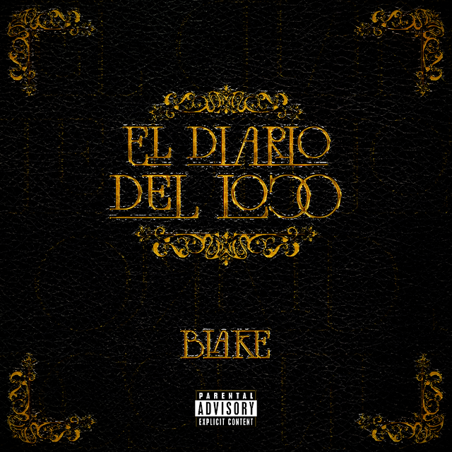

Àlbum · 28 de febrero de 2025
La canción "El Diario Del Loco" de Blake es una crítica mordaz a la superficialidad y la hipocresía de la sociedad moderna. A través de sus letras, Blake expresa su frustración con las personas que se preocupan más por las apariencias y las redes sociales que por la autenticidad y las relaciones genuinas.